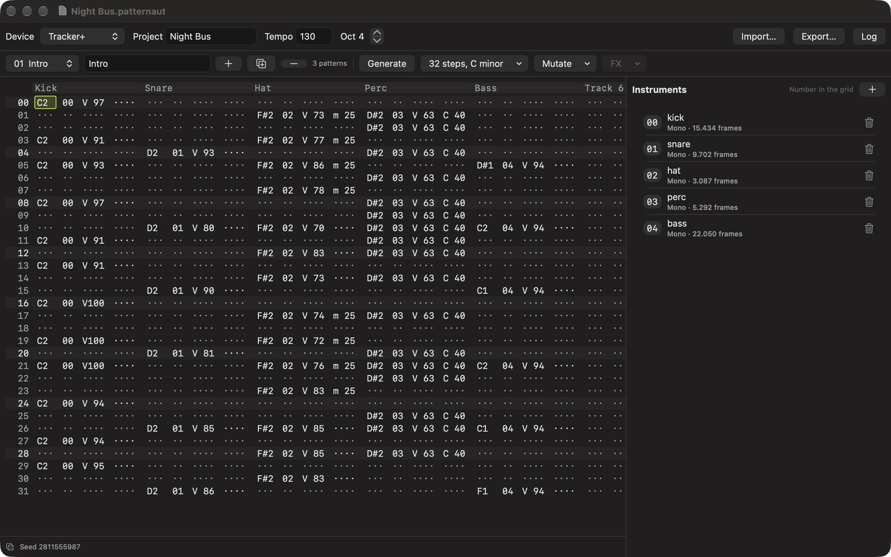

Patternaut
Build the pattern. Break the pattern. Take it to the Tracker.
I make music on a Polyend Tracker, and I built Patternaut to do the fiddly parts on my Mac first. It generates and varies patterns, and writes them to the SD card as the files the machine already reads, so I spend less time programming steps and more time playing.
$8.99 once on the Mac App Store, no subscription. No account, nothing sent to a server.

What it does
Press Generate and you get a beat. Kick, snare, hat, usually some percussion carrying the device's own Chance effect so it keeps varying while it plays, often a bass line in the key you picked. Every press is a different one, and every result is reproducible from its seed, so a pattern you liked is a pattern you can have back. Mutate takes what is there and nudges it, gently or until it falls apart.
The editor is a tracker grid and works like one. Notes on the keyboard rows, sixteen tracks, both effect lanes per step with the device's own symbols and value ranges, undo on everything. A document holds a whole set of patterns, not one.
It has no audio engine, so it does not play your patterns back. The hardware is where you hear them. It is a companion to the machine rather than a replacement for it, and it has no song mode.
How it reaches the Tracker
Patternaut writes a real project folder to your card: .mtp patterns, an .mt project and .pti instruments, laid out the way the machine lays them out itself. Drop in a WAV and it becomes an instrument, converted to what the hardware plays.
It reads the same files back. Point it at a project you already made on the Tracker and it brings in the patterns, their names, the track names, the tempo and the samples with their audio. Change what you like, write it back into the same project, and the instrument assignments, mixer and effects the machine keeps for itself are left alone.
The formats are checked against Polyend's own open-source library and against projects written by the hardware, and the round trip is tested on a Tracker+.
Get it
Patternaut is on the Mac App Store, for macOS 14 and later. It is $8.99, paid once, and that is the whole arrangement: no subscription, no upgrade pricing, no account. If there is something you want it to do next, write to me. The next things on my list came from people who did.
Questions
Does Patternaut play my patterns?
No. It has no audio engine, so the hardware is where you hear them. It is a companion to the machine rather than a replacement for it.
Which hardware does it write files for?
Polyend Tracker+ and Tracker Mini. The formats are checked against Polyend's own open-source library and against projects written by the hardware itself, and the round trip is tested on a Tracker+.
Can it open a project I already made on the Tracker?
Yes. It reads a project folder off the card: the patterns, their names, the track names, the tempo and the instruments with their audio. You can write it back into the same project, and the instrument assignments, mixer and effects the machine keeps for itself are left alone.
What does it cost?
$8.99, paid once, on the Mac App Store. No subscription, no account and no upgrade pricing.
What does it need?
A Mac running macOS 14 or later, and a way to reach your SD card.
Does it send anything anywhere?
No. Patternaut makes no network requests at all and collects nothing. Your work stays on your Mac and on your card.